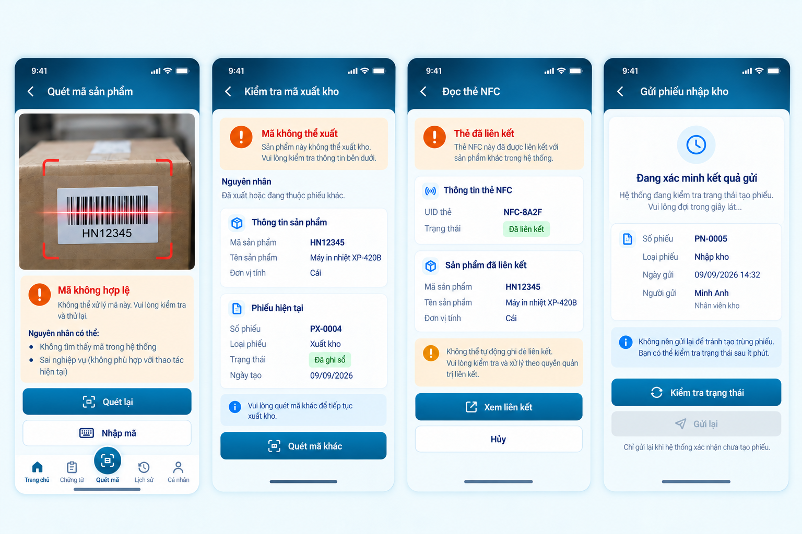
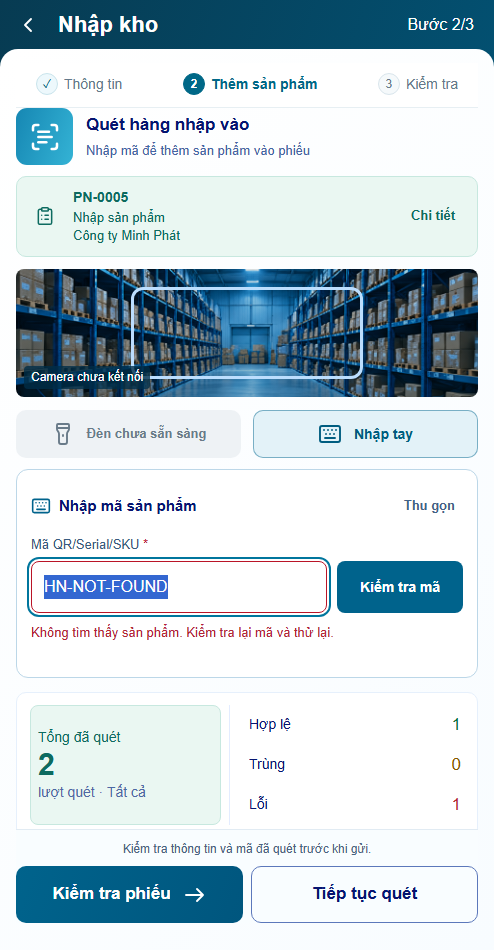
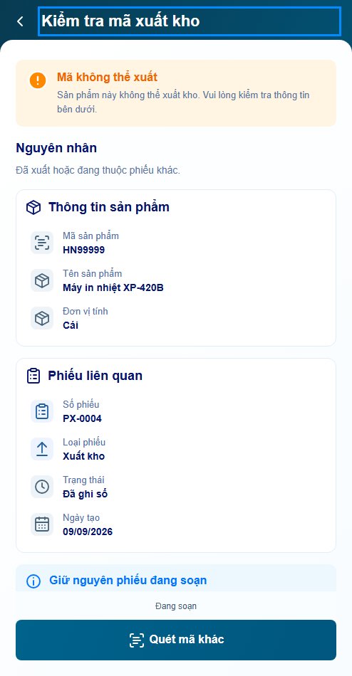
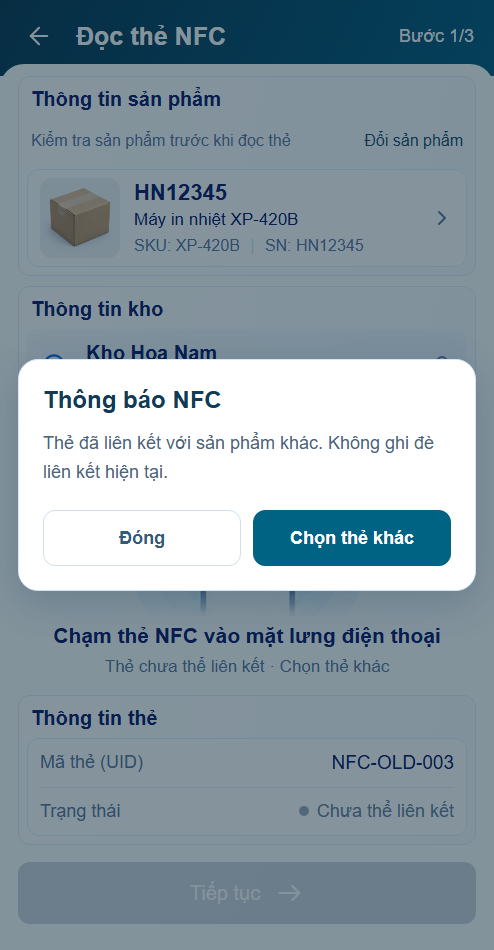
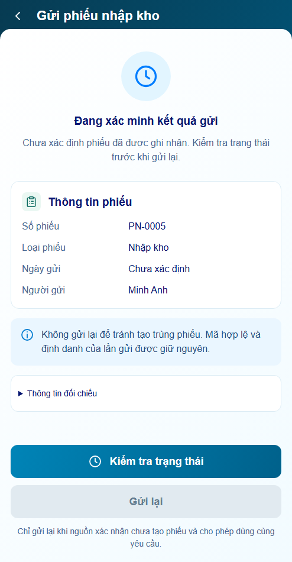

Mở bản P17 r02 mới nhất — sáu nâng cấp UX
P17 · Ngoại lệ quét
Revision01 · Prototype Hoa Nam · Bốn panel, tái sử dụng owner P04/P05/P07.
Behavior: PASS prototypeVisual: chờ bạn reviewProduction/hardware: chưa xác minh
Mở ứng dụng · minhanh / preview · Báo cáo + cách mở từng state · Nguồn thiết kế
114 test logic; 11 nhóm browser P17; footerLOCK 4 viewport; actual4panel×5viewport. Kết quả kiểm tra không thay cho nghiệm thu thiết kế.
B17 nguyên bản · ảnh tham chiếu không sửa

Khác biệt cần review: shell494×950 theo contract mới; camera dùng ảnh kho minh họa hiện có; raw/UID theo fixture owner; ngày gửi thiếu nguồn ghi Chưa xác định. Không Post nhập/xuất, không ghi đè NFC.
P17.S01 · Mã không hợp lệ
Trước · owner hiện hành
P17 r01 · actual 494×950
P17.S02 · Mã không thể xuất
Trước · owner hiện hành
P17 r01 · actual 494×950
P17.S03 · Thẻ đã liên kết
Trước · owner hiện hành
P17 r01 · actual 494×950
P17.S04 · Đang xác minh kết quả gửi
Trước · owner hiện hành P17 r01 · actual 494×950
P17 r01 · actual 494×950